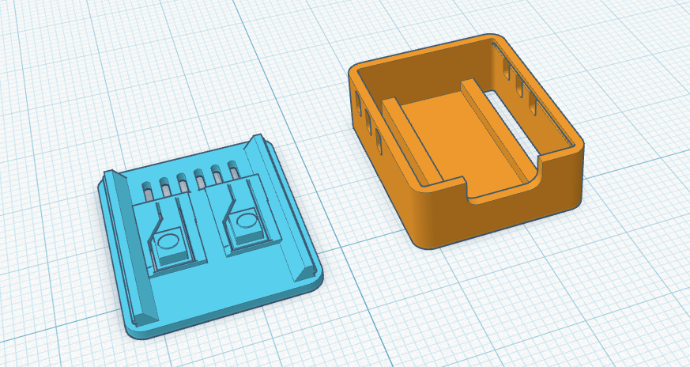

Description
Prototype 1 was the first attempt at creating a protective enclosure for the ESP32-C3 Zero. The design successfully held the board with no issues and with perfect USB slots.
Pros
- It fits well in the case so it doesn't move around inside the case and damage the components.
Cons
- The lid of the case isn't easy to put on nor is it easy to take off.
- The buttons are hard to use.
Testing Results
- Board fit: Perfect
- USB access: Easy
- Strength: Moderate
- Appearance: Basic
Improvements
To make the lid easy to attach, easy to take off by hand, and to make the buttons much more accessible and easy to use.